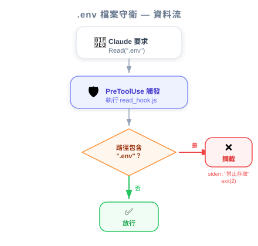
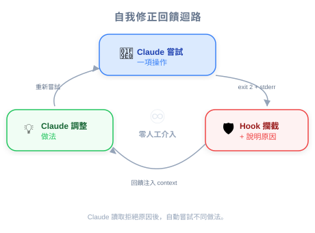

| 项目 | 细节 |
|---|---|
| 考试范围 | D3 — Claude Code Configuration & Workflows（占考试 20%） |
| Task Statements | 3.2 (custom commands & hooks), 1.5 (Agent SDK hooks) |
| 课程来源 | claude-code-in-action / 05-hooks / Lesson 16 |

这堂课展示了完整可运行的 hook 实现 — 从配置到测试。PM 不需要写 hook，但理解实现流程帮助你撰写更好的验收标准、估算工程量，并验证安全需求是否正确执行。
把实现 hook 想象成在建筑物里安装新的安保摄像头系统：
| 步骤 | 建筑安保 | Hook 实现 |
|---|---|---|
| 1. 登记摄像头 | 加到安保控制面板 | 在 settings.local.json 加入 hook 设置 |
| 2. 对准正确的门 | 设置摄像头角度 | 设置 matcher 指向特定工具 |
| 3. 设置警报规则 | "晚上 10 点后有人进入就警报" | 写脚本："文件路径包含 .env 就封锁" |
| 4. 测试系统 | 走过门口验证 | 请 Claude 读取 .env — 验证被封锁 |
| 5. 启用 | 启动系统 | 重启 Claude Code |
💡 PM 洞察
最重要的细节：hook 需要重启才会生效。这意味着向团队部署新 hook 不是即时的 — 在你的推出计划中考虑这一点。
当工程师实现 hook 时，以下是验收标准的检查清单：
Read 和 Grep。
settings.local.json（不在 git 中）settings.json（commit 到 git）⚠️ PM 风险警示
如果安全 hook 在
settings.local.json，每个开发者必须个别配置。合规需求应坚持用settings.json（团队共用）。
.env这意味着 hook 创造了自主合规 — AI 代理自我修正，不需人工介入。
| Hook 复杂度 | 工时 | 示例 |
|---|---|---|
| 简单文件防护 | 1-2 小时 | 封锁读取 .env、.credentials |
| 模式匹配封锁 | 2-4 小时 | 封锁符合黑名单的 Bash 命令 |
| 条件逻辑 | 4-8 小时 | 封锁 > $500 退款，主管批准则允许 |
| 多工具协调 | 1-2 天 | 跨多个工具执行工作流程顺序 |
| ❌ 错误做法 | ✅ 正确做法 | 为什么 |
|---|---|---|
| 假设保存后 hook 就"自动生效" | 改 hook 后一定重启 Claude Code | Hook 只在启动时加载 |
| 接受静默封锁（无反馈信息） | 要求清楚、可行动的错误信息 | 没有反馈 Claude 无法自我修正 |
| 合规 hook 放在个人设置 | 合规 hook 放在团队共用设置 | 个人设置无法跨团队强制执行 |
| 只测试封锁案例 | 同时测试封锁和允许 | 过于激进的 hook 破坏正常工作流程 |
团队实现了 PreToolUse hook 来防止 AI 客服代理处理超过 $500 的退款。测试中 hook 正确封锁了大额退款。但代理回复客户"I encountered an error"而非解释政策。你应建议什么？
团队部署了 PreToolUse hook 来封锁 Claude 修改 migration 文件。一位工程师反馈 hook 在他机器上未启用。调查发现 hook 只配置在 team lead 的 settings.local.json。正确的修正方式？
.claude/settings.json 并 commit 到版本控制~/.claude/settings.json）配置 hook工程师实现了 PostToolUse hook，在每次 API tool call 后执行数据验证。测试中 hook 正确验证数据，但 Claude 没有在回应中使用验证后的数据。最可能的问题？